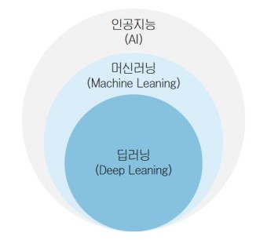

앞서 말한 약한 AI를 구현할 때는 머신러닝(기계학습)을 사용한다. 흔히 딥러닝과 머신러닝을 헷갈려하지만 머신러닝이 더 큰 개념이다.
따라서 둘의 차이점은 분명히 존재한다. 머신러닝은 데이터로만 학습하기에 사전지식에 어긋나는 것이 있다면 바로 아닌 것으로 처리하지만
딥러닝은 사전지식을 사용하지 않고 데이터의 특성을 분석한다. 따라서 사전지식과 다르지만 정답인 것이 있다면 딥러닝 방식으로 구현된 AI는
정답을 맞출 수 있다.

인공지능이 개념이라면, 이것을 실체화한것이 에이전트이다. 에이전트는 초기에 갓난아기 상태이지만 전문가 시스템이 훈련 데이터를 가지고 에이전트를 훈련시키면 점점 더 똑똑해진다. 에이전트가 똑똑해질수록 분석과 분류를 더 정확하게 하게 된다. 예를 들어 딥마인드 회사는 벽돌깨기 게임을 하는 인공지능을 개발했다. 처음에는 인공지능이 볼을 놓치는 등 사람에 비해 형편없는 성능을 보여주었다. 하지만 충분한 시간 동안 인공지능을 개발한 후에는 인공지능이 스스로 왼쪽 벽돌을 집중적으로 부순 뒤, 벽돌 위쪽으로 볼을 밀어넣어 자동적으로 위쪽 벽돌을 부수는 방법을 알아내었다.